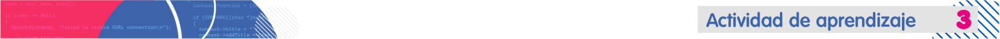

Realiza una calculadora en Java con las características solicitadas.
Acciones de aprendizaje
1. Practica y familiarízate con la sintaxis de Java realizando un proyecto de una calculadora básica con las siguientes características:
- Realiza un menú donde el usuario pueda seleccionar entre 5 opciones así: 1. suma, 2. resta, 3. multiplicación, 4. división, 5. residuo y 6. salir
- Recuerda realizar validación de los datos de entrada del usuario y que siempre las operaciones sean correctas.
2. Aprende sobre la estructura switch con:
- Bedoya, A. [XACA RANA]. (2016). 04 Curso Programación JAVA Condicionales anidados - Switch. [Vídeo]. Y utilice la estructura switch.
- Implementa la estructura switch en el proyecto de la calculadora.
- Imprima los resultados de cada una de las operaciones de la calculadora básica.
3. Toma imágenes del código del programa, del menú y de los resultados de las diferentes operaciones y compártelas en el foro calculadora.
Formas de trabajo
-
Individual: el estudiante es responsable de su proceso de aprendizaje y de las actividades que realiza.
Tiempos (Semana 1)
- Trabajo autónomo del estudiante: 6 horas.
- Acompañamiento docente: 3 horas.
Evaluación formativa:
-
Implementa adecuadamente la sintaxis del lenguaje para dar solución al problema planteado.
- Usa de manera correcta la estructura switch en la solución del problema planteado.